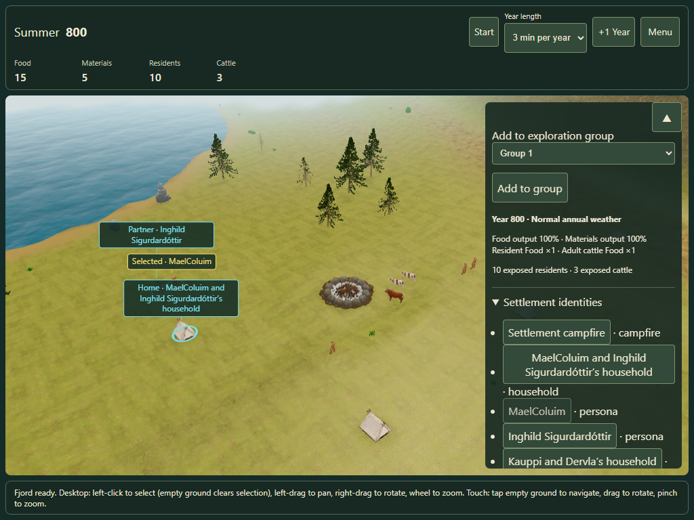
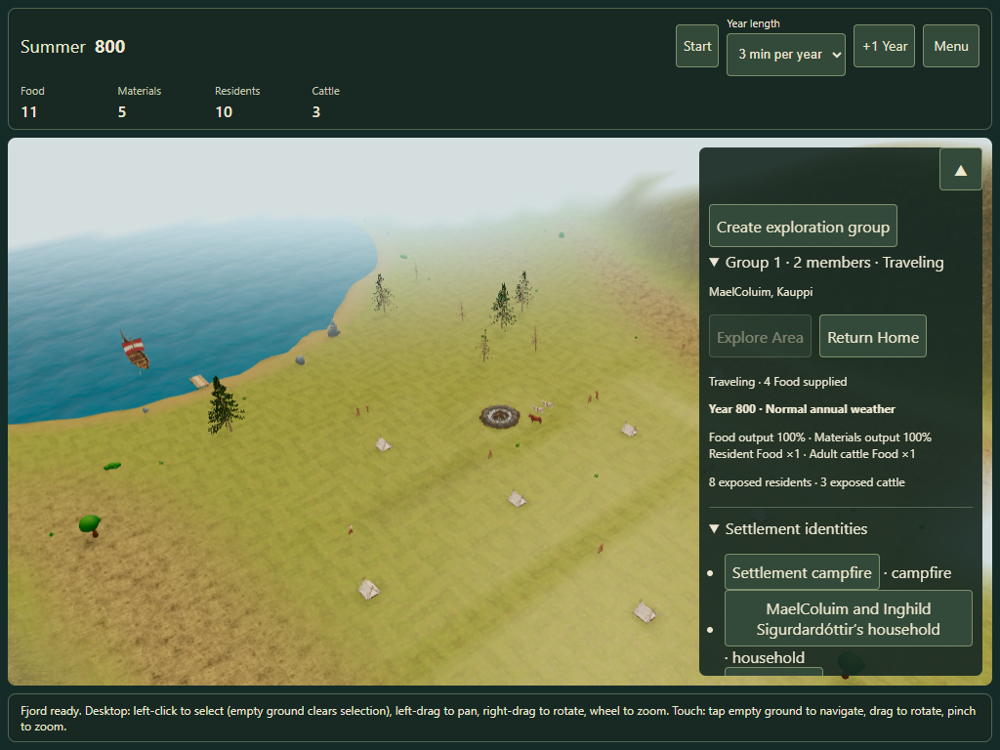
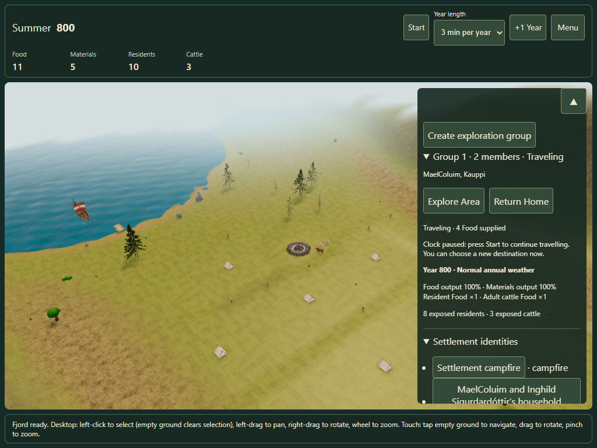
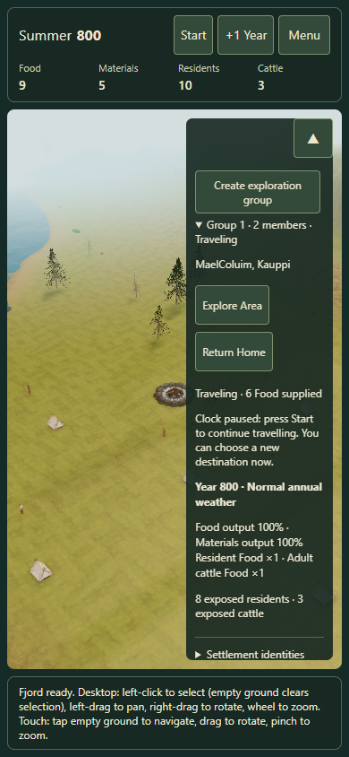

Exploration groups · One destination tap & smooth running
With no selection, use Create exploration group. Groups are numbered automatically. Select residents and use Add to group. Clear selection to expand each group's Explore Area and Return Home actions.
Explore Area → tap a land destination → the group leaves. Food is packed and charged once for the whole trip; the amount appears in the group record. No extra send button is needed. If the chosen point is unavailable, safe nearby ground within 8 m can be used. Water, cliffs and unreachable routes remain blocked; a rejected order spends nothing.
Each member follows their own saved route from their actual current position with the native Run animation. Travel fills the interval between campaign updates instead of moving in short bursts. Early arrivals wait at the destination. Return Home reverses each member along their own reached route.
You can replace a destination while travelling or returning. Choose Explore Area, then tap another destination. The group keeps its original homeward destination; new provisions are charged for the new journey. The clock stays paused if it was paused. The panel now explains when Start is required. Ordinary taps stay camera navigation outside target mode.
Exploring more cells no longer darkens the terrain: seasonal source colors and shader hooks are restored when scenery is refreshed. A full-scene test compares discovered terrain with a fresh load at the exact same paused season/time.

Add the selected resident
One tap starts travel and packs Food
Real residents on their own routes
Compact touch controlsPrevious direct-travel evidence remains an unchanged historical record.
Existing discovery campaigns retain their knowledge. Refresh the existing game tab to load this correction. Desktop Edge touch emulation is verified; revised physical-device feedback remains open and the prototype stays opt-in.